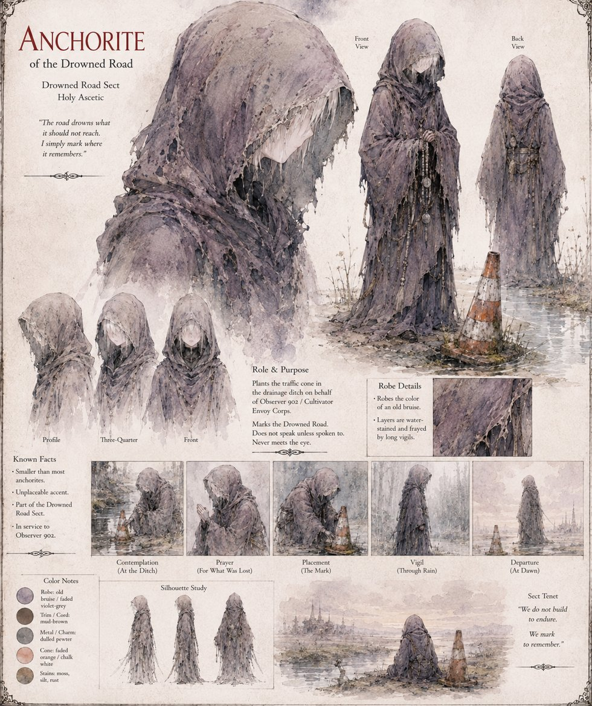

Anchorite of the Drowned Road
Drowned Road Sect · Holy Ascetic
One of the small, tolerated, faintly pitiable Drowned Road sect, who hold that no soul can properly appreciate the Unconquered Sun's grace without first practicing, at length and in mud, its total absence. Three nights before Duke Blakk's household guard crosses a nameless drainage ditch, this Anchorite — smaller than most, its accent unplaceable, working on behalf of Observer 902 of the Cultivator Envoy Corps — kneels at the ditch's lip and sets three identical objects into the silt rather than one, standard redundancy under a protocol written after several thousand comparable seedings elsewhere.
The tenants who notice the Anchorite at all notice only what they always notice about that sect: robes the color of an old bruise, an accent no market morning has ever placed, and an eye that never once meets theirs. Their part in the story ends there. What they left in the mud does not.
“The road drowns what it should not reach. I simply mark where it remembers.”
Appears in The Vessel of Unmediated Grace